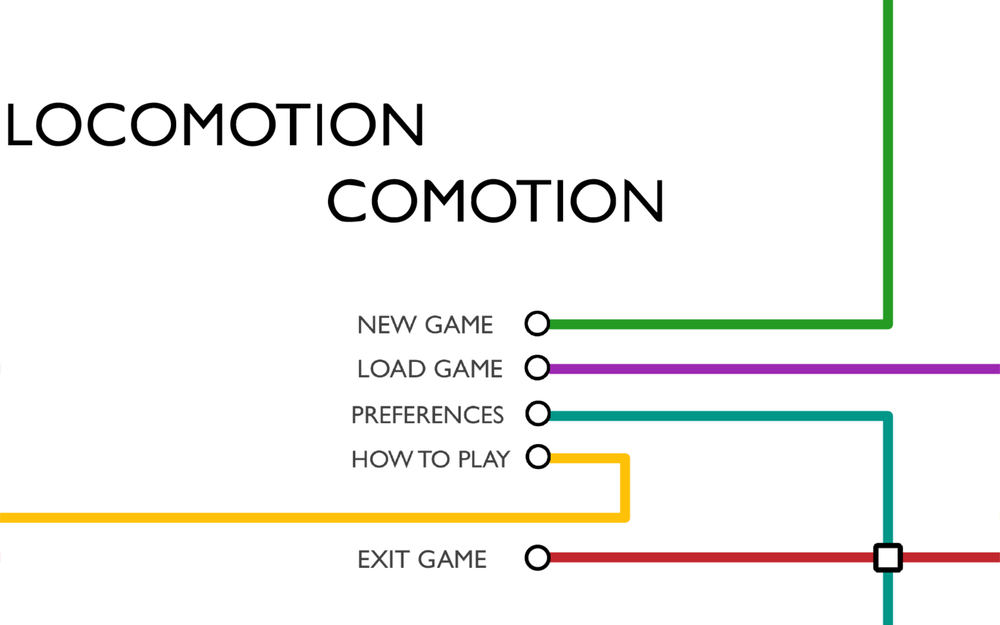
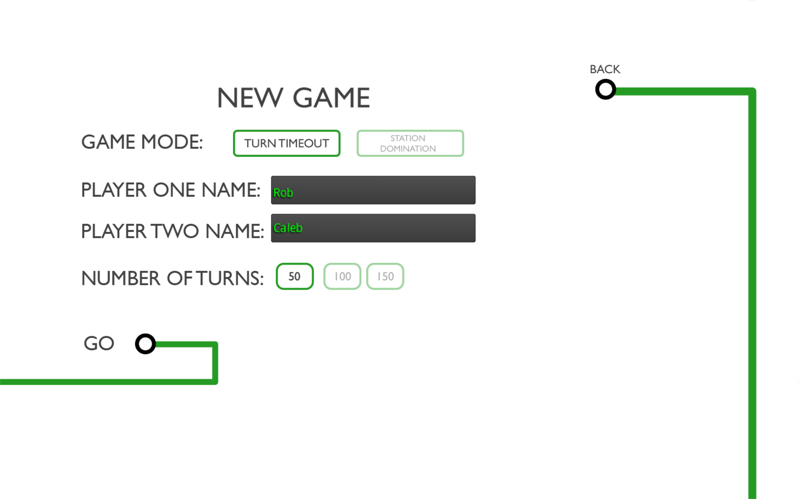
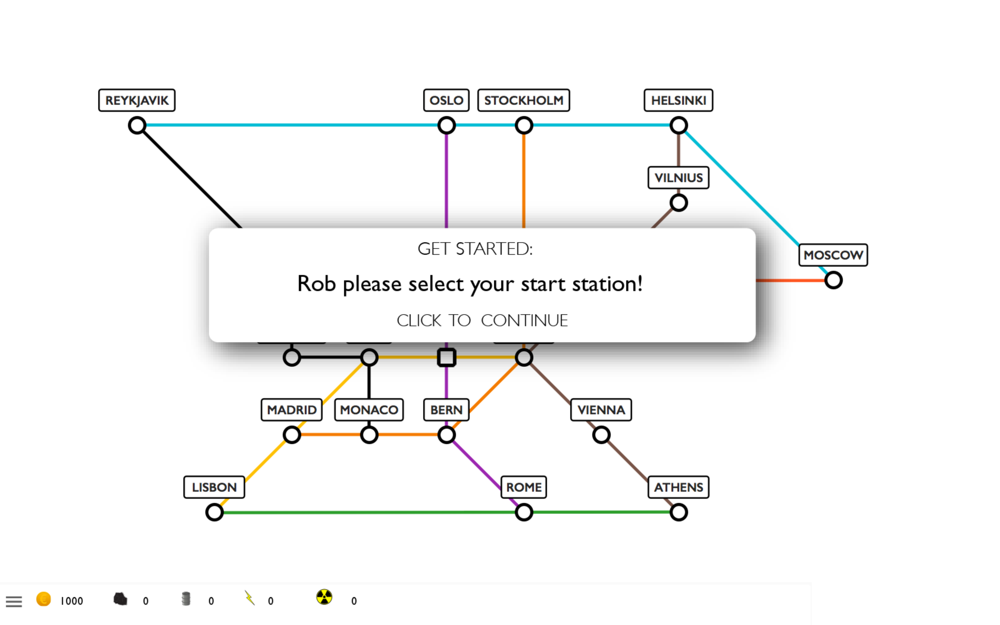
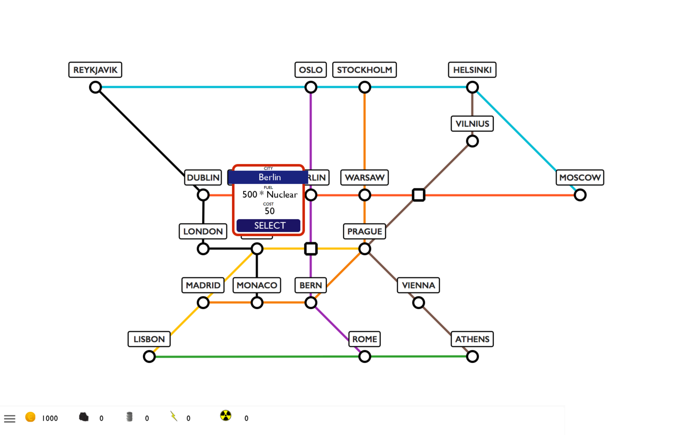
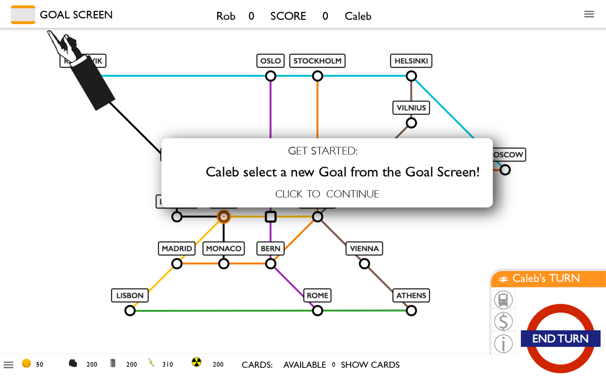
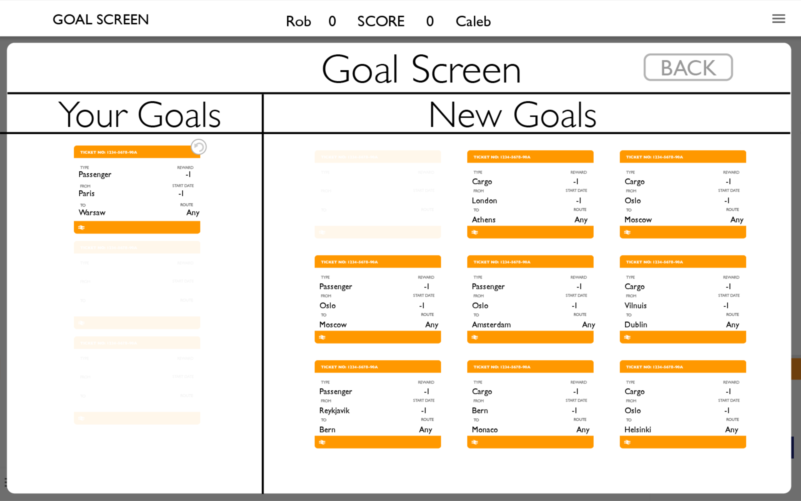
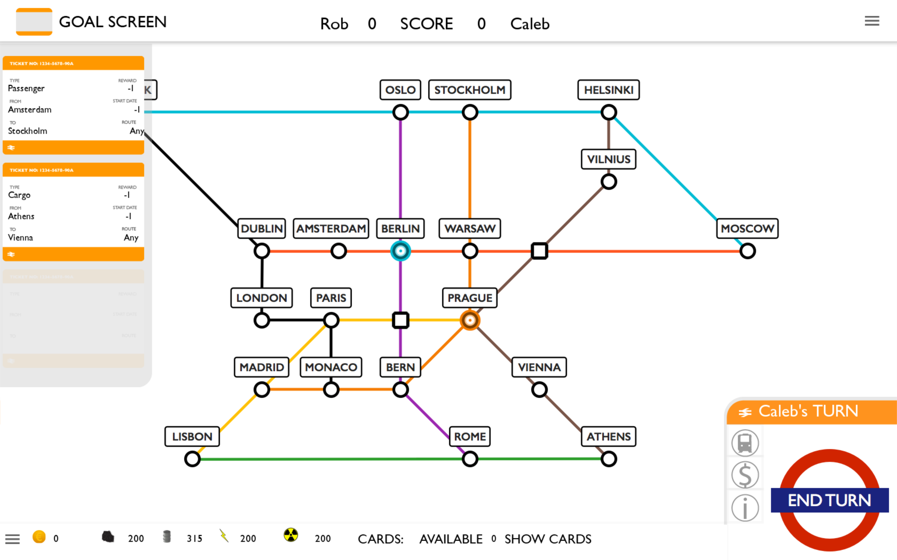
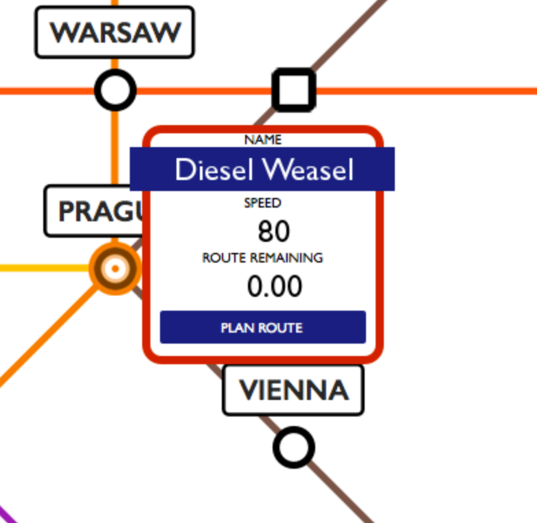
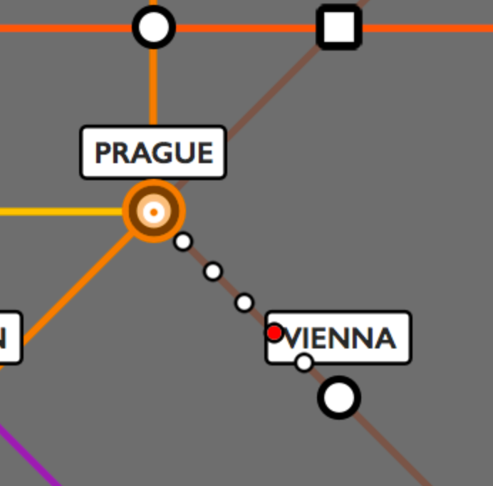

How to play
Starting a new game
Start a new game by pressing "New Game".
Choose your game mode and enter player names
Selecting Stations
 Each player is prompted to select their starting station. This is where you will recieve resources from and where your train will start from.
Selecting Goals
You are then prompted to open the goal menu to select a new goal.
They then select a goal from the selection presented.
The goals can be displayed by pressing on the ticket button.
Train Routing
You can enter routing mode by selecting a train and pressing the "Plan Route Button".
You can enter the route by selecting a series of cities. The route is highlighted by dots, with the animated red dot indicating direction of movement.

The route information is displayed in the bottom left hand corner. This includes total route length, how much of that route is remaining and fuel type & cost.